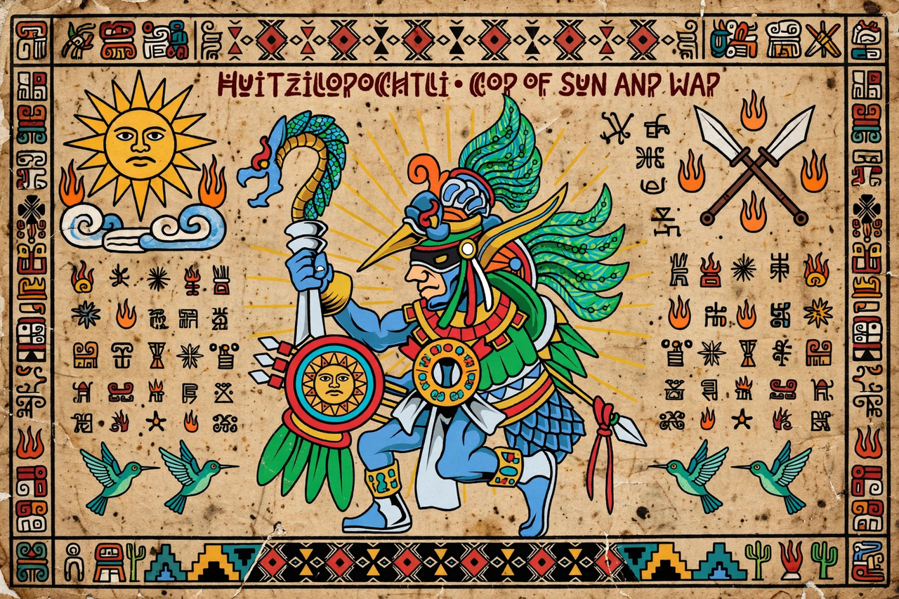

| Huitzilopochtli | |
|---|---|
| Name meaning | "Hummingbird of the South/Left" (Nahuatl) |
| Domain | Sun, war, human sacrifice |
| Patron of | The Mexica; the city of Tenochtitlan |
| Mother | Coatlicue |
| Siblings | Coyolxauhqui; the Centzon Huitznahua |
| Cult centre | Templo Mayor, Tenochtitlan |

Huitzilopochtli (Classical Nahuatl: Huītzilōpōchtli, "Hummingbird of the South" or "Hummingbird of the Left") was the principal deity of the Mexica (Aztec) people — a god of the sun and of war, and the patron god of the Mexica capital Tenochtitlan. Unusually among Aztec gods, he was not adopted from earlier Mesoamerican religions but was specific to the Mexica, rising with them from obscure migrants to rulers of an empire.
According to Mexica myth, Huitzilopochtli was conceived miraculously when his mother Coatlicue placed a ball of hummingbird feathers in her bosom. His sister Coyolxauhqui and his four hundred brothers, the Centzon Huitznahua, angered by the pregnancy, resolved to kill their mother — but Huitzilopochtli sprang from the womb fully armed and slew them atop the hill of Coatepec. The myth was re-enacted daily: as the sun, Huitzilopochtli fought the forces of darkness each night and was reborn each dawn, a cosmic battle that required nourishment in the form of blood and human hearts.
Huitzilopochtli shared the dual shrine atop the Templo Mayor with the rain god Tlaloc. His festival, Panquetzaliztli, fell in the dry season and involved the raising of banners, processions, and large-scale sacrifice. Victims' hearts were offered to the sun and their bodies rolled down the pyramid steps, re-enacting Coyolxauhqui's fall. Mexica migration legend told how Huitzilopochtli guided his people from Aztlan to the island in Lake Texcoco where they saw an eagle on a cactus — the sign to found Tenochtitlan, an image preserved today on the flag of Mexico.
Aztec · Templo Mayor · Tenochtitlan · Tlaloc · Aztec calendar